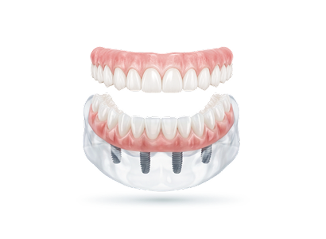
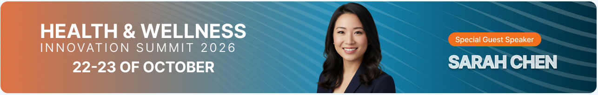
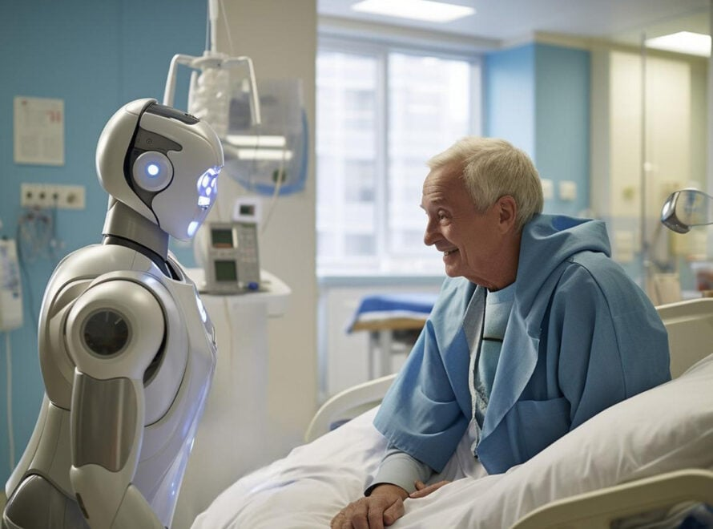
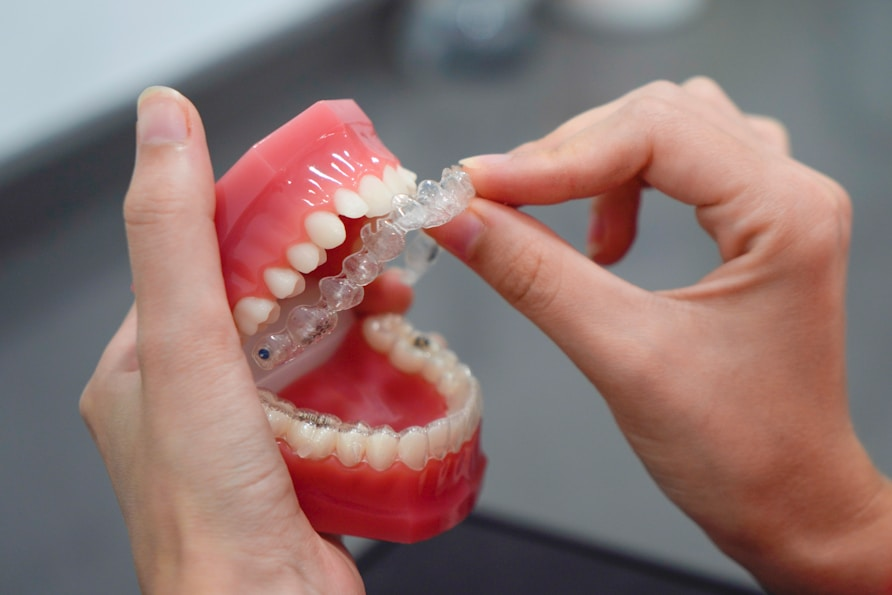
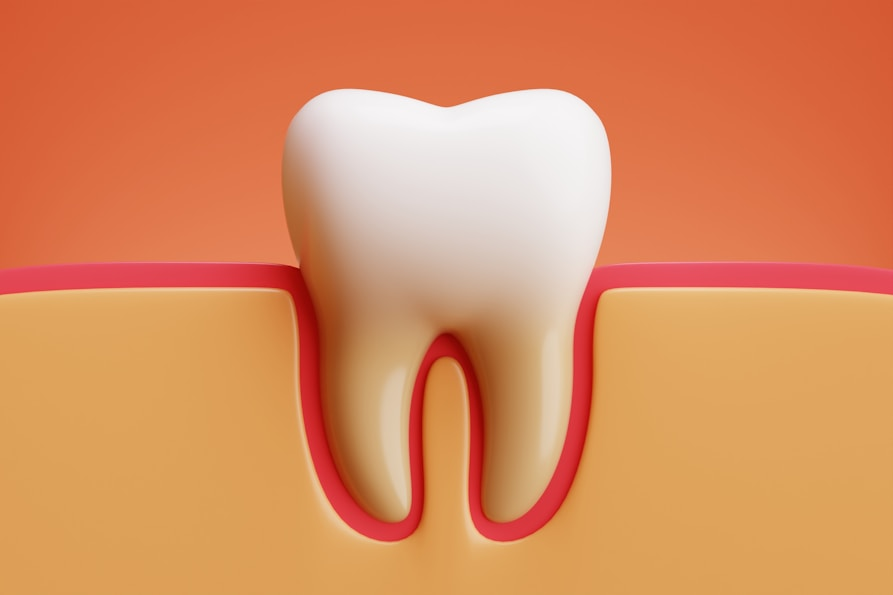
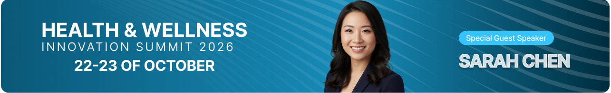
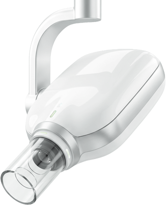
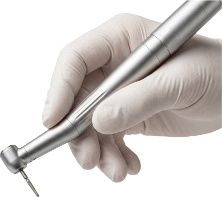
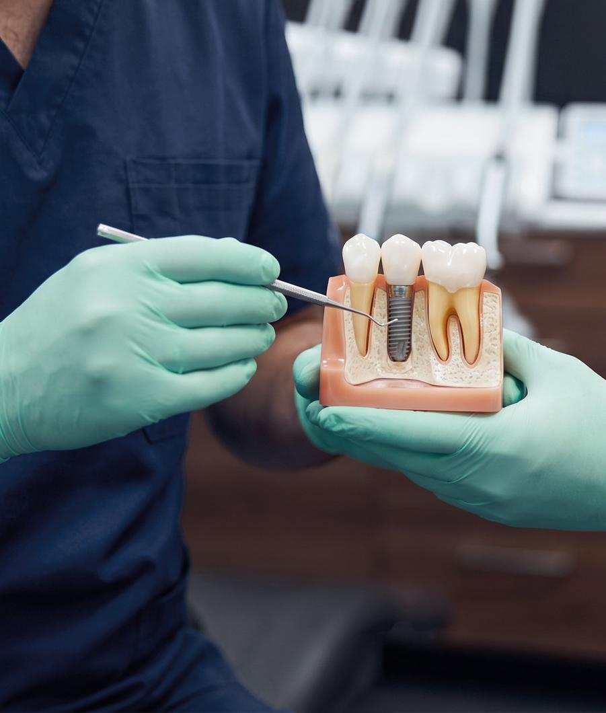
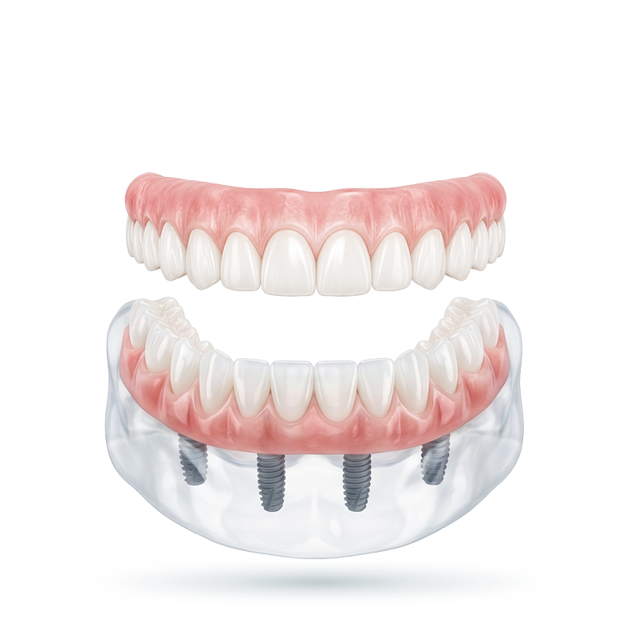

Restorative solutions
From single-tooth crowns to full-arch photogrammetry implant restorations, built for clinical function and lasting aesthetics.
Explore RestorationsWhat started as a CBCT 3D conversion solution company at the beginning of 2005 has evolved into a full digital dental partner, adapting to all available resources offered throughout the years.
What we do
From a single restoration to a full-arch case, select the support your practice needs without losing the continuity of the case.
Ways to work with us
The process keeps the clinician involved where it matters, with a clear delivery choice at the end.
Submit patient records and create the order through the HIPAA-compliant 3DDX Connect portal.
Our team checks the records, then develops the design to your prescription and clinical requirements.
Review the proposed design with an in-house doctor and request refinements before fabrication.
Take a production-ready digital design, or let 3DDX produce, quality-check and ship the appliance.
Receive a production-ready STL file and manufacture through your preferred in-office workflow.
Let 3DDX manufacture, quality-check and deliver the finished appliance to your practice.

Heard from clinicians
Because our main focus is your convenience and providing outstanding quality, with dedicated customer support agents and in-house doctors available from 8am to 8pm EST, this is what our clients have to say about us.
3D Diagnostix provides high quality service and manages to do it with an excellent turn around time. They are extremely responsive, generous and knowledgeable. They truly treat their customer right and do everything they can to help you grow and be successful.
Paresh Patel, DDSLenoir, North Carolina
3D Diagnostix provides high quality service and manages to do it with an excellent turn around time. They are extremely responsive, generous and knowledgeable. They truly treat their customer right and do everything they can to help you grow and be successful.
Paresh Patel, DDSLenoir, North Carolina
3D Diagnostix provides high quality service and manages to do it with an excellent turn around time. They are extremely responsive, generous and knowledgeable. They truly treat their customer right and do everything they can to help you grow and be successful.
Paresh Patel, DDSLenoir, North Carolina
3DDX Resources
Read clinical articles, revisit webinars, watch workflow guidance and study the stages of successful surgery.

Articles
Webinars
Case studies
The human element
Because we understand even though technology can make our practices easier, the human element is irreplaceable. That’s why every step in our workflow includes a dedicated in-house expert, whether it is one of your account managers or our in-house specialised dental experts.

For a seamless integration and adoption into our ecosystem, our dedicated teams are always available.
Start now
Leverage the 3DDX expertise to adopt new restorative solutions into your practice.
Start now
Seize the full capability of our in-house dentists to ensure the best prognosis for your cases.
Start now
Use the technology without the capital investment, from immediate pickup denture conversions.
Start nowFrequently asked
A few practical details before your next case. Our team can help with anything more specific.
View all FAQsYou may print a shipping label by logging into your account on our website and choosing “shipping label” from the menu on the left. Then select your preferred shipping method (overnight or standard shipping) and your state. Click “Print shipping label” to generate a printable PDF version.
We accept both digital scans (intraoral scans) and traditional stone model/PVS impressions, which will be poured into study models. We recommend capturing all tissue anatomy in edentulous spaces. Impressions or scans should record the entire arch of interest, plus a bite registration and the opposing arch.
Yes, you can rush your cases. Simply check “Yes” next to the “Rush if possible” option when placing your order. An additional fee will apply.
We accept both digital scans (intraoral scans) and traditional stone model/PVS impressions, which will be poured into study models. Capture all tissue anatomy in edentulous spaces and the entire arch of interest. We prefer both a bite registration and an impression or scan of the opposing arch.